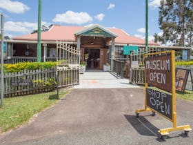
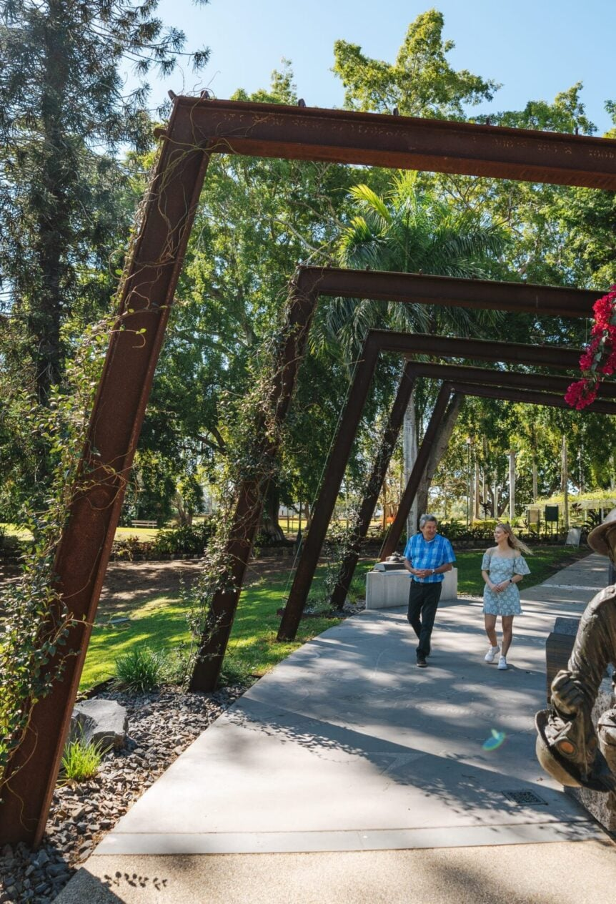
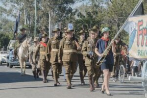
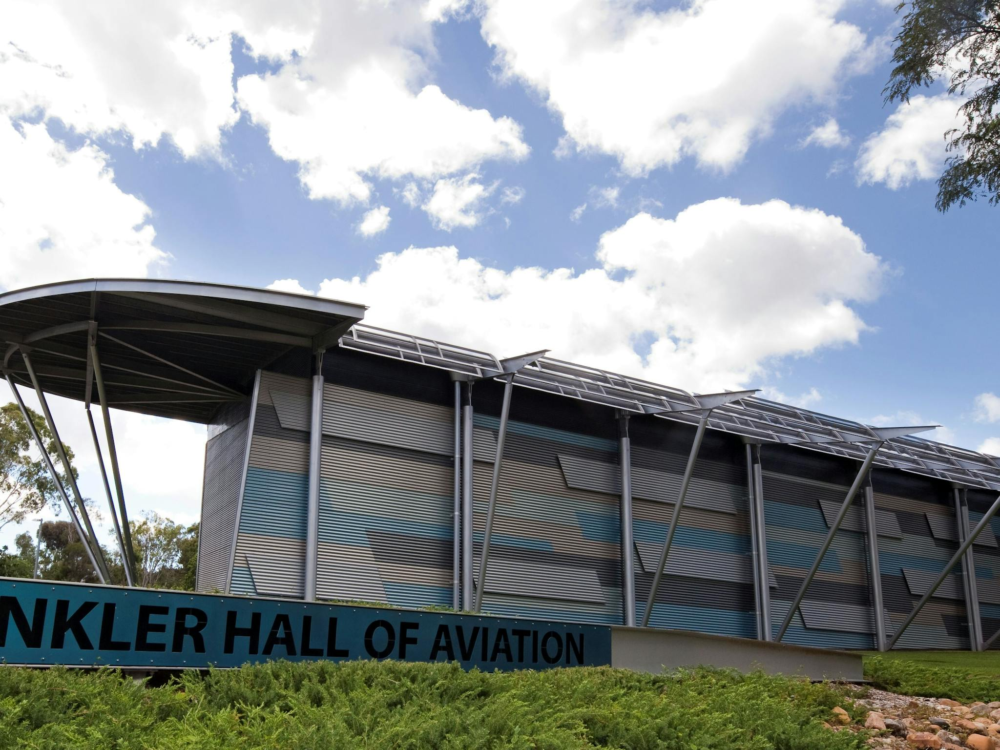

Along the way · Bruce Highway road trips
A little detour.A lasting memory.
Heading up the coast or making your way south? Leave room for a story, a local flavour and somewhere you hadn’t planned to stay.
Which way are you heading? Northbound ↑ Southbound ↓
Gympie to Bundaberg · discover the Fraser Coast along the way
Gympie 
Tiaro & Bauple 
Maryborough 
Howard & Torbanlea Childers 
Bundaberg
A journey along the Bruce Highway corridor, with town detours and a connection to Bundaberg. Choose a stop below to make it yours.
01 / A local story Follow the macadamia story. Bauple · heritage & hinterland
Explore Bauple Museum and the village’s self-guided heritage trail, with its connection to the macadamia nut.
Explore this stop ↗ 02 / Stories that stay Meet the people behind the history. Maryborough · military heritage
Visit the Gallipoli to Armistice Memorial, then explore personal stories and collections at the Military and Colonial Museum.
Explore this stop ↗ 03 / Beneath the surface Discover the coast’s coal story. Howard · mining history
Discover the history of the Burrum coalfields and the communities of Howard and Torbanlea through the Burrum District Museum.
Explore this stop ↗ Make Howard your history stop along the highway corridor. Check museum opening days before you travel; this is a museum visit, not an underground mine tour.
Discover the Burrum Coast ↗
Have a little longer? Let the coast call you off course. Make time for Hervey Bay, or explore the Great Sandy Strait villages on a coastal alternative between Gympie and Maryborough.
Explore the coastal detour ↗